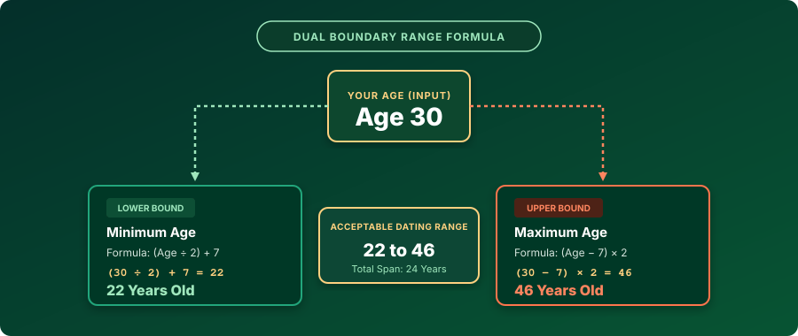
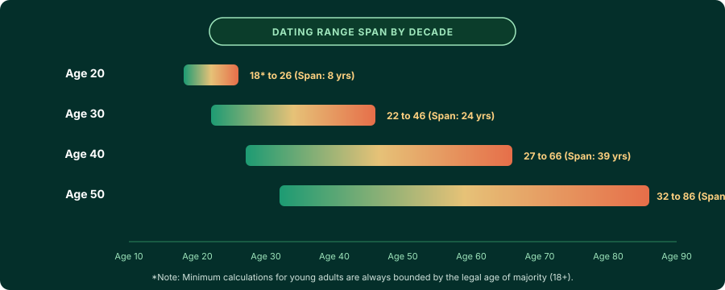

Your dating age range is defined by two complementary mathematical thresholds derived from the classic dating rule:
- Minimum Dating Age (Lower Bound):
(Your Age ÷ 2) + 7 - Maximum Dating Age (Upper Bound):
(Your Age − 7) × 2
For example, a 30-year-old has a minimum dating age of 22 and a maximum dating age of 46. The acceptable dating range is therefore 22 to 46 years old (a 24-year total span).
1. The Dual Mathematical Formulas
When discussions around dating age rules occur, people frequently focus exclusively on the younger limit: the famous "half-your-age-plus-seven" threshold. However, an authentic relationship bracket cannot exist in a vacuum with only one boundary. To evaluate whether an age gap is socially balanced, an individual needs both a lower boundary and an upper boundary.
The Complete Dual-Boundary Formula System
Lower Boundary (Youngest Partner)
Take your chronological age, divide it in half, and add 7. This establishes the lowest age that does not generate broad cultural skepticism regarding life-stage disparity.
Upper Boundary (Oldest Partner)
Subtract 7 from your chronological age, and multiply the remainder by 2. This represents the algebraic inverse of the lower formula, identifying the oldest partner for whom you would not be "too young."
By calculating both numbers simultaneously, you establish an inclusive bracket: [Min Age, Max Age]. Any potential partner whose chronological age falls within this interval is considered within your socially normalized dating pool under this classical heuristic.
2. The Mathematics of Reciprocal Symmetry
Why is the formula for the maximum dating age (Age − 7) × 2? Many people mistakenly believe the maximum formula was invented as a separate guideline. In reality, it is a strict algebraic necessity created by reciprocal dating symmetry.
Consider the fundamental principle of mutual consent and balanced perception: If Person A is considered old enough to date Person B, then Person B must logically be considered young enough to date Person A. If the rule were asymmetric, you would create absurd contradictions where an older person believes a relationship is socially appropriate, but the younger person's calculation brands the older partner as predatory.
To prevent this contradiction, the maximum formula is derived by reversing the minimum formula:
- Let Y represent the younger partner's age, and O represent the older partner's age.
- The standard minimum rule asserts:
Y ≥ (O ÷ 2) + 7. - Subtract 7 from both sides:
Y − 7 ≥ O ÷ 2. - Multiply both sides by 2:
2 × (Y − 7) ≥ O, which simplifies to:O ≤ (Y − 7) × 2.
Because the inverse requires multiplying by 2 (whereas the lower formula divides by 2), the upper boundary expands at double the linear velocity of the lower boundary. This explains why an individual's acceptable age range reaches substantially further into older demographics than into younger ones as they advance through adulthood.
3. Complete Dating Age Range Reference Chart (Ages 18 to 75)
Below is the definitive reference table showing the calculated minimum dating age, maximum dating age, and total allowable age span for every age from 18 to 75. All calculations assume consenting legal adults.
| Your Age | Minimum Age (Lower) | Maximum Age (Upper) | Acceptable Dating Range | Total Span |
|---|---|---|---|---|
| 18 | 16* Legal 18+ | 22 | 18 to 22 | 4 Years |
| 20 | 17* Legal 18+ | 26 | 18 to 26 | 8 Years |
| 22 | 18 | 30 | 18 to 30 | 12 Years |
| 24 | 19 | 34 | 19 to 34 | 15 Years |
| 26 | 20 | 38 | 20 to 38 | 18 Years |
| 28 | 21 | 42 | 21 to 42 | 21 Years |
| 30 | 22 | 46 | 22 to 46 | 24 Years |
| 32 | 23 | 50 | 23 to 50 | 27 Years |
| 35 | 24.5 (25) | 56 | 25 to 56 | 31 Years |
| 38 | 26 | 62 | 26 to 62 | 36 Years |
| 40 | 27 | 66 | 27 to 66 | 39 Years |
| 45 | 29.5 (30) | 76 | 30 to 76 | 46 Years |
| 50 | 32 | 86 | 32 to 86 | 54 Years |
| 55 | 34.5 (35) | 96 | 35 to 96 | 61 Years |
| 60 | 37 | 106 | 37 to 106 | 69 Years |
| 70 | 42 | 126 | 42 to 100+ | 58+ Years |
*Note: In jurisdictions where the age of majority is 18, statutory law always sets the hard floor regardless of lower mathematical calculations.
4. Visualizing the Dating Range Flow
To understand how an input age bifurcates into the minimum and maximum boundaries, examine the visual flow below. For an individual at age 30, the lower branch compresses by half while the upper branch expands by a factor of two:

Notice how the spread is asymmetrical: Age 30 can date 8 years younger (down to 22), but 16 years older (up to 46). The upward spread is exactly twice as large as the downward spread. This 1:2 ratio remains constant across all adult calculations.
5. How the Dating Range Evolves Across Life Stages
The practical implication of the dating age range formula is that your viable dating pool expands exponentially as you get older. What begins as a narrow four-year corridor in early adulthood transforms into a vast multi-decade continuum by mid-life.

In Your Twenties: Tight Milestones and High Sensitivity
During the twenties, brain development (specifically prefrontal cortex executive functioning) is completing, and life transitions occur rapidly—from university to entry-level employment to financial independence. Because life stages change so drastically in two- or three-year increments, even a five-year gap feels enormous. At age 22, the formula permits dating between 18 and 30, but dating a 30-year-old often introduces substantial discrepancies in career stability and long-term priorities.
In Your Thirties: Expanding Stability
By age 35, both partners are generally established adults. The formula yields an allowable range of 25 to 56 years old. A 25-year-old partner has completed college and established independence, while a 50-year-old partner is still in their active working career. While 25 and 56 occupy very different cultural and generational perspectives, the sheer cognitive and power disparities of youth have dissipated.
In Your Forties and Fifties: Broad Generational Overlap
At age 50, the theoretical range extends from 32 to 86 years old—a span of 54 years. In practical dating, very few 50-year-olds seek partners in their eighties or thirties; instead, sociological research shows that people in mid-life naturally date within a tight window of ±5 to ±8 years. The formula simply reflects that, from a perspective of social ethics, two consenting adults over age 30 possess full agency to negotiate whatever age difference suits their personal values.
6. Legal Limits vs. Mathematical Rules
It is vital to state clearly: mathematical formulas never override statutory law. The dating age rule is a cultural heuristic that originated in 19th-century French literature (commonly attributed to Max O'Rell's 1901 book Her Royal Highness Woman). It was never formulated as a legal statute.
Key legal and ethical caveats include:
- Age of Majority and Consent: In the United States, United Kingdom, Canada, and Australia, the legal age of majority is 18. Even if the mathematical formula suggests that a 21-year-old can date a 17.5-year-old, statutory rape laws, local consent ages, and school-district policies create strict legal liability.
- Institutional Power Dynamics: Regardless of age, relationships involving direct supervisory authority—such as professor-student, manager-subordinate, or physician-patient—frequently violate professional codes of conduct and employment agreements.
- Financial and Developmental Asymmetry: A wide numerical gap between an established 35-year-old professional and a 25-year-old intern can create subtle coercion or dependency, regardless of whether it passes an arithmetic test.
7. Age Gap vs. Exact Calendar Intervals
When applying a dating age range in real life, remember that people's stated ages change on their birthdays, but the true chronological distance between two human beings is a fixed calendar interval. To evaluate a specific partnership accurately, consider using our suite of specialized chronological tools:
- Dating Age Calculator: Instantly computes your exact lower bound, upper bound, and tells you whether a prospective partner's age or birth date falls inside your acceptable range.
- Age Gap Calculator: Measures the exact distance between two individuals in years, months, and days, preventing common errors caused by birth month offsets.
- Dating Age Rule Explained: The comprehensive historical origin and sociological breakdown of the half-your-age-plus-seven guideline.
- Minimum Dating Age Guide: Detailed mathematical and developmental exploration of the younger boundary.
- Maximum Dating Age Guide: In-depth algebraic derivations and analysis of the upper boundary.
Frequently Asked Questions
What is the formula to calculate a dating age range?
The dating age range uses two complementary formulas: the minimum dating age is (Your Age ÷ 2) + 7, while the maximum dating age is (Your Age − 7) × 2. Together, these two formulas define your lower and upper boundaries.
Why is the maximum dating range wider than the minimum range?
The maximum dating formula multiplies the remainder by 2, whereas the minimum formula divides by 2. This mathematical inverse reflects reciprocal dating symmetry: if an older partner calculates you as their minimum, your corresponding maximum must match their age, causing the older span to expand at twice the rate.
What is the acceptable dating age range for a 30-year-old?
For a 30-year-old, the minimum dating age is (30 ÷ 2) + 7 = 22 years old. The maximum dating age is (30 − 7) × 2 = 46 years old. Therefore, the socially acceptable dating age range is 22 to 46 years old (a span of 24 years).
Does the dating age range formula apply to teenagers or minors?
No. The mathematical dating rule is designed exclusively for consenting adults. Legal statutory protections and the age of majority (typically 18) always supersede informal mathematical guidelines.
What is the acceptable dating age range for a 40-year-old?
For a 40-year-old, the minimum dating age is (40 ÷ 2) + 7 = 27 years old. The maximum dating age is (40 − 7) × 2 = 66 years old. This establishes a total potential dating span of 39 years.
Is a dating age range a rigid social law or just a guideline?
The dating age range is a cultural rule of thumb, not a legal or moral imperative. As adults mature through their 30s, 40s, and beyond, personal compatibility, shared life goals, emotional maturity, and mutual respect matter far more than numerical formulas.